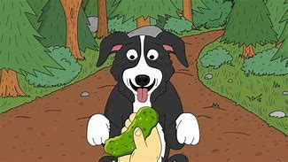

MR PICKLES

Mr. Pickles é o protagonista da série animada Mr. Pickles,
do Adult Swim. À primeira vista, ele parece ser apenas um
adorável e leal border collie da família Goodman,
especialmente para seu jovem dono, Tommy. No entanto,
por trás de sua aparência amigável, Mr. Pickles é, na verdade,
um cão demoníaco com um apetite insaciável por violência e depravação.
Ele comete atos brutais e bizarros em segredo, muitas vezes escapando
sem ser descoberto. A série é conhecida por seu humor negro extremo,
cenas grotescas e sátira ultrajante, tornando Mr. Pickles um dos
personagens mais macabros da animação adulta.
VOLTAR